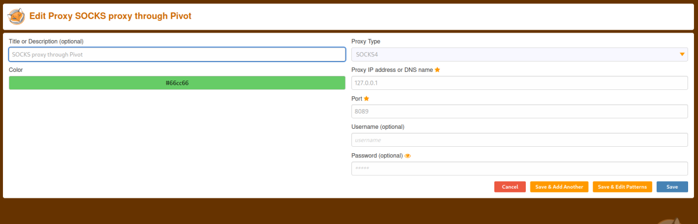

Proxying Firefox through Pivot Host
This work to reach a target WebApp through a Pivot host using Firefox
ATTENTION: if we want to use Burp as a proxy check the guide at the next chapter
1. Setp SSH dynamic forwarding
ssh -D <AttackerIP>:<AttackerSocksProxyPort> -f -N user@<IPpivotSystem>
–f → tells SSH to run in the background
–N → tells SSH not to run a remote command
example: ssh -N -D 127.0.0.1:8089 user@192.168.1.125
-C → will on compression for the SSH connection but it will sloq down the connection!
-D → setups up dynamic port forwarding. 8089 will be the local port you’ll use for Burp’s Socks settings.
2. setup FoxyProxy
